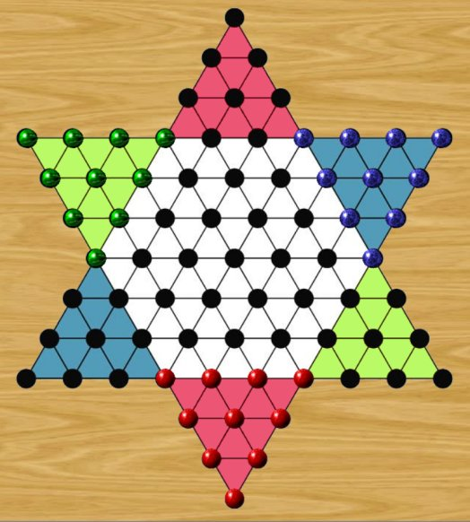

In Chinese Checkers, you must move your marbles into the opposite empty goal triangle before your opponents manage to fill their own. The game is won as soon as the opposite triangle is completely filled with marbles of any colour. (This rule prevents opponents from blocking your goal triangle.) Players alternate turns, moving one marble at a time.
A marble can move in two ways: it may slide to an adjacent empty space, or it may jump over an adjacent marble, of either colour, into the empty space directly on the opposite side. A marble may continue jumping as long as each jump is legal, or the player may choose to stop early. To end a jumping sequence before all possible jumps are taken, select Pass Move from the menu or toolbar. No marbles are ever captured in Chinese Checkers.
Despite its name, Chinese Checkers has no historical connection to China. The game is a variation of the 19th-century board game Halma and entered the commercial market in the 1930s. The best strategy is to try and advance faster by chaining a series of jumps. This is better than sliding your marbles forward one space at a time. The most effective strategy is to arrange your marbles in long, continuous sequences that can be jumped over, creating a kind of bridge toward the opposite side. Just be careful that your opponent doesn’t end up using these bridges more effectively than you do.
In Super Chinese Checkers, a marble may jump across multiple spaces in a single leap, provided there is exactly one marble in the middle space of the jump. Super Chinese Checkers is popular in France, and is a faster version of the standard game.
Reference
Chinese checkers (Wikipedia article).
• You can download my free Chinese Checkers program here, but you must own the software Zillions of Games to be able to run it (I recommend the download version).
• See also Trio.
© M. Winther, 2026 March